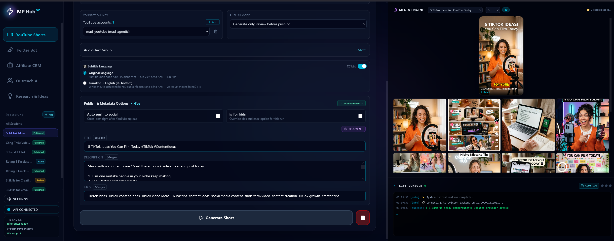
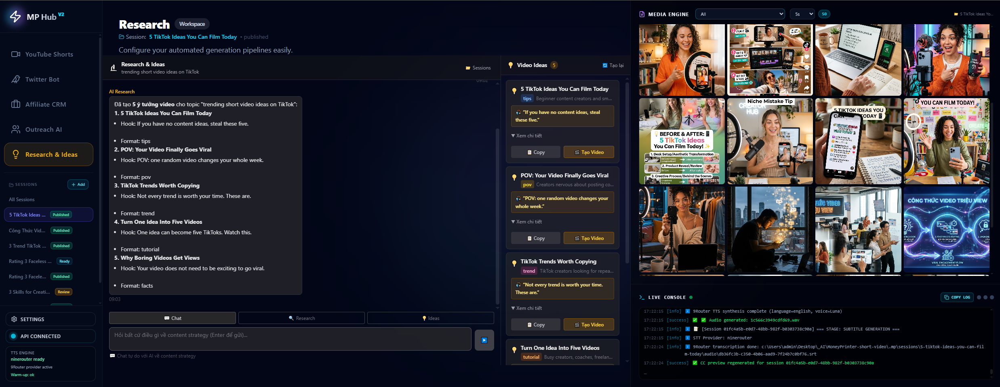
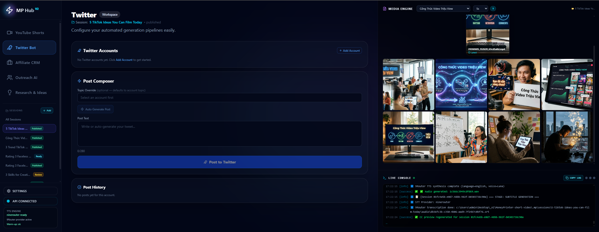
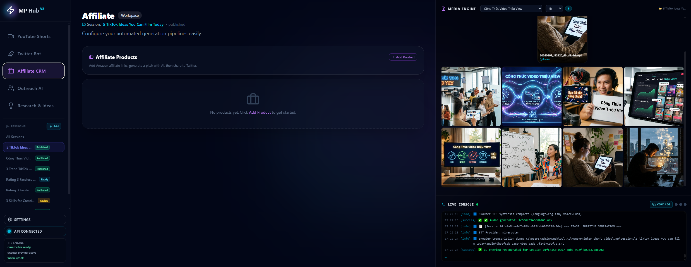

Từ một ý tưởng thành video short hoàn chỉnh trên máy local.
MoneyPrinter tự động hóa research, viết script, tạo ảnh, tạo voice, sinh phụ đề, dựng video dọc và chuẩn bị upload YouTube Shorts, Twitter/X, TikTok, Instagram từ một dashboard.

Pipeline tạo video
Mỗi stage ghi dữ liệu vào session riêng. Nếu lỗi giữa chừng, có thể resume hoặc regenerate đúng stage bị lỗi.
Tìm trend, góc khai thác và ý tưởng video.
Viết hook, thân bài, CTA và metadata.
Tạo ảnh dọc 9:16 cho từng cảnh.
Tạo audio bằng KittenTTS, Edge TTS, Gemini TTS hoặc provider khác.
Sinh caption SRT từ audio thật.
Dựng MP4 1080×1920 bằng MoviePy, FFmpeg, ImageMagick.
Review thủ công rồi upload/cross-post khi sẵn sàng.
Setup nhanh trên Windows
Dùng khi clone project mới hoặc chuyển project sang máy khác.
Lệnh chạy nhanh
# 1. Clone project git clone https://github.com/mad-agentic/MoneyPrinter-short-video.git cd MoneyPrinter-short-video # 2. Tạo config local copy config.example.json config.json # 3. Cài backend + frontend setup.bat # 4. Chạy app start_hub.bat
Checklist trước khi dùng
- Cài Python 3.12, Node.js 18+, FFmpeg, ImageMagick 7.x.
- Cài Firefox nếu muốn upload YouTube/X bằng browser automation.
- Mở
config.jsonvà setimagemagick_path. - Chọn LLM provider: Ollama, 9Router, Gemini hoặc OpenAI-compatible endpoint.
- Kiểm tra image model, TTS voice, STT model và search model trong Settings.
- Mở app tại
http://localhost:5174.
Không commit file runtime local: config.json, .env, .mp/, browser profile, cookies, token, media output, venv/, frontend/node_modules/.
Lệnh debug thủ công
Backend FastAPI
cd src ..\venv\Scripts\python.exe -m uvicorn api.main:app --port 15001 --reload
Frontend Vite
cd frontend npm run dev -- --host 127.0.0.1 --port 5174
Tính năng chính
Project gom workflow tạo video, review media và phân phối nội dung vào một app local.
YouTube Shorts Workspace
Tạo subject, script, audio text, caption, video output và metadata trong cùng session.
Research & Ideas
Research trend, brainstorm hook, chọn idea rồi đẩy sang YouTube session.
TTS & STT
Chọn voice/model cho từng ngôn ngữ, sinh audio và phụ đề từ audio thật.
Media Engine
Review ảnh scene, chọn ảnh thủ công, regenerate stage cần thiết.
Twitter/X & Cross-post
Quản lý account, compose post, hỗ trợ phát hành nội dung sau khi review.
Resumable Sessions
Dữ liệu runtime nằm trong .mp/sessions/<uuid>/, dễ resume và kiểm tra output.
Video Shorts đã tạo
Xem 3 video output thực tế được tạo từ workflow này.
Ảnh giao diện
Ảnh lấy từ dashboard local hiện có trong project.




